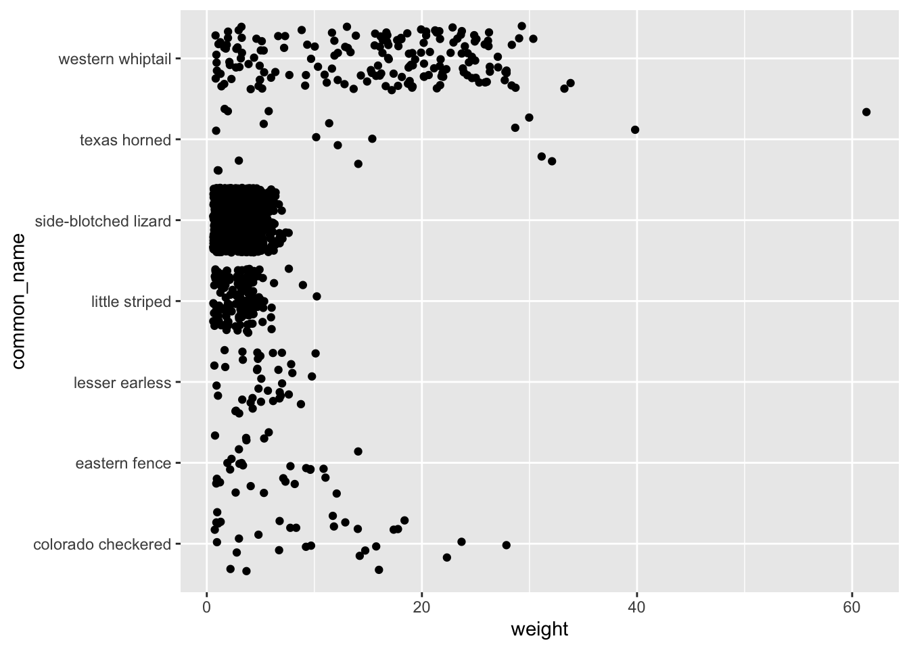
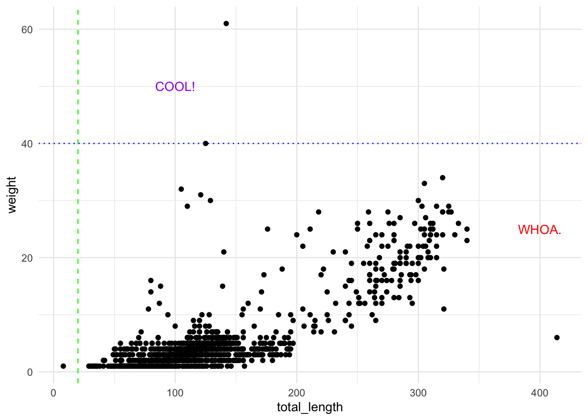
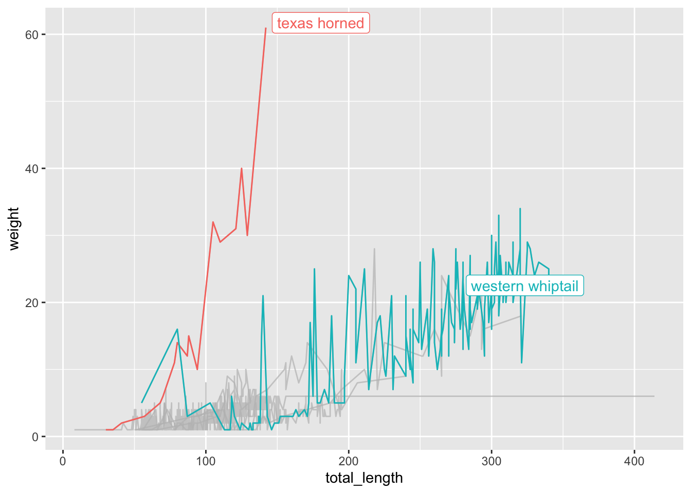

Fork then clone this repo to create a version-controlled R Project for Day 8
Create a new Quarto document
Attach R packages
# General use packages:library(tidyverse)library(here)library(janitor)# Specifically for plots:library(patchwork)library(ggrepel)library(gghighlight)library(paletteer)library(ggExtra)library(ggbeeswarm)# And for another dataset we'll explore:library(gapminder)# Spatiallibrary(sf)
Lightfoot, D. and W.G. Whitford. 2020. Lizard pitfall trap data from 11 NPP study locations at the Jornada Basin LTER site, 1989-2006 ver 37. Environmental Data Initiative. https://doi.org/10.6073/pasta/4a6e258fb49c31e222ecbbcfd128967f
From the data package:
“This data package contains data on lizards sampled by pitfall traps located at 11 consumer plots at Jornada Basin LTER site from 1989-2006. The objective of this study is to observe how shifts in vegetation resulting from desertification processes in the Chihuahaun desert have changed the spatial and temporal availability of resources for consumers. Desertification changes in the Jornada Basin include changes from grass to shrub dominated communities and major soil changes. If grassland systems respond to rainfall without significant lags, but shrub systems do not, then consumer species should reflect these differences. In addition, shifts from grassland to shrubland results in greater structural heterogeneity of the habitats. We hypothesized that consumer populations, diversity, and densities of some consumers will be higher in grasslands than in shrublands and will be related to the NPP of the sites. Lizards were captured in pitfall traps at the 11 LTER II/III consumer plots (a subset of NPP plots) quarterly for 2 weeks per quarter. Variables measured include species, sex, recapture status, snout-vent length, total length, weight, and whether tail is broken or whole. This study is complete.”
There are 16 total variables in the lizards.csv data we’ll read in. The ones we’ll use in this workshop are:
date: data collection date
scientific_name: lizard scientific name
common_name: lizard common name
site: research site code
sex: lizard sex (m = male; f = female; j = juvenile)
sv_length: snout-vent length (millimeters)
total_length: body length (millimeters)
toe_num: toe mark number
weight: body weight (grams)
tail: tail condition (b = broken; w = whole)
Jornada vegetation spatial data
Citation
Jornada Basin LTER Spatial Data: Dominant Vegetation of the JER and CDRRC in 1998 (Download KMZ 3972 KB) Dominant and subdominant vegetation on the Jornada Experimental Range and Chihuahuan Desert Rangeland Research Center in 1998. Published in Gibbens, R. P., McNeely, R. P., Havstad, K. M., Beck, R. F., & Nolen, B. (2005). Vegetation changes in the Jornada Basin from 1858 to 1998. Journal of Arid Environments, 61(4), 651-668.
Rows: 1628 Columns: 16
── Column specification ────────────────────────────────────────────────────────
Delimiter: ","
chr (10): date, scientific_name, common_name, zone, site, plot, spp, sex, rc...
dbl (6): pit, toe_num, sv_length, total_length, weight, pc
ℹ Use `spec()` to retrieve the full column specification for this data.
ℹ Specify the column types or set `show_col_types = FALSE` to quiet this message.
The essentials
When we start creating a ggplot graph, we need three basic building blocks:
We’re using ggplot
What data we want to use in our graph
What type of graph we’re creating
For example:
# ggplot essential pieces, 3 ways (that do the same thing):# Like this: ggplot(data = lizards, aes(x = total_length, y = weight)) +# That's 1 & 2geom_point() # That's 3# Or, alternatively:ggplot(data = lizards) +geom_point(aes(x = total_length, y = weight))# Or another way:ggplot() +geom_point(data = lizards, aes(x = total_length, y = weight))
Which all produce the same thing:
Which makes changing graph types straightforward by updating the geom_:
ggplot(data = lizards, aes(x = total_length, y = weight)) +geom_line() # Bad idea, just demonstrating a geom switch.
Keep in mind that some graph types only require one variable - for example, geom_histogram:
`stat_bin()` using `bins = 30`. Pick better value with `binwidth`.
And remember to carefully consider the type of data you’re trying to visualize, which will help to direct the graph type. For example, a jitterplot usually has one categorical variable and one continuous variable:
ggplot(data = lizards, aes(y = common_name, x = weight)) +geom_jitter()

Not sure which type of graph is appropriate for your data? My favorite resource is Yan Holtz’ From Data to Viz - check it out, it is fun and amazing, and links to code examples from the R Graph Gallery.
Aesthetic mapping
Updating based on a constant? NO aes()!
To change aesthetics of a graph based on a constant (e.g. “Make all the points BLUE”), we can add the information directly to the relevant geom_ layer. Some things to keep in mind:
fill: updates fill colors (e.g. column, density, violin, & boxplot interior fill color)
color: updates point & border line colors (generally)
We’ll learn a few more advanced label skills later on.
Facetting
Sometimes it’s useful to split up information in a graph into separate panels. For example, maybe we want to have a separate graph of total length versus weight for each lizard species. That would be really tedious to create them all manually from subsets. Instead, we’ll facet by distinct groups within a variable.
We’ll learn two ways to do this:
facet_wrap(): the one where you give it one faceting variable and the panels get wrapped into a grid
facet_grid(): the one where you make a grid based on row & column faceting variables
For example, let’s say we just want each species to have its own panel. Then we can use facet_wrap():
But what if we want to make a grid where the panels are split across groups by lizard sex and if it has a broken tail or not? Since we have two variables being used to create our grid, we’ll use facet_grid():
ggplot loves putting things in alphabetical order - but that’s rarely the order you actually want things in if you have categorical groups. Let’s find some total counts of lizards in the dataset by common name, then make a column graph:
Warning: The shape palette can deal with a maximum of 6 discrete values because more
than 6 becomes difficult to discriminate
ℹ you have requested 7 values. Consider specifying shapes manually if you need
that many have them.
Warning: Removed 176 rows containing missing values or values outside the scale range
(`geom_point()`).
Example 2: Reminders of position, facet_grid, and factor reordering
Let’s make a stacked column graph of lizard species by site:
Why does that matter to us? Because a whole lot of the subtle things that make a graph way better are updating using the scales suite of helpful functions.
For a complete list of scales functions & usage, see: https://scales.r-lib.org/index.html
Thoughtful breaks, limits & labels
Little things make a big difference in data visualization. Just like we should take great care to make axis labels useful and complete, we also need to think about how values are communicated for our different variables.
In 2-D data visualization, that means customizing your breaks, limits, & tick mark labels & formatting. From Hadley Wickham & Dana Seidel: “The most common use of the scales package is to control the appearance of axis and legend labels. Use a break_ function to control how breaks are generated from the limits, and a label_ function to control how breaks are turned in to labels.”
Let’s explore some different ways to update breaks and labels.
Updating breaks & labels
The important thing: know what type of variable you have on each axis so that you know what scale_ version to call. For example:
For dates: scale_*_date()
For continuous variables: scale_*_continuous()
For discrete variables: scale_*_discrete()
Within those layers added to your plot, you can update the breaks =, limits =, labels = and expand =options.
ggplot(data = lizards, aes(x = total_length, y = weight)) +geom_point()
ggplot(data = lizards, aes(x = total_length, y = weight)) +geom_point() +scale_x_continuous(breaks =c(0, 250, 500), limits =c(0, 500)) +scale_y_continuous(breaks =seq(from =0, to =70, by =10), limits =c(0, 70)) +theme_light()
But you can also do so much more! For example, you can convert to a log scale:
Explore the different options for label_* that appear once you start typing it in…you’ll see a bunch of different options. Make your tick marks currencies, scientific notation, or more - just by updating the labels within the correct scale_! Go ahead & try it out, it’s pretty amazing (and see the many different label options here: https://scales.r-lib.org/reference/index.html).
Customized aesthetics with scale_ functions
We’ve learned to use scales functions to update breaks and labels. It is also useful for updating aesthetics, for example to customize color gradients, set size bins, and more.
Again, it is very important to know what aesthetic you are trying to update.
For example, is it a fill aesthetic you’re hoping to customize? Then you might use scale_fill_*(). But if it is a color aesthetic, you’d use scale_color_*() functions. If it is the transparency, then scale_alpha_*(). If it is the shape, then scale_shape_*(). So make sure you know which aesthetic you are hoping to change with scales!
ggplot(data = lizards, aes(x = total_length, y = weight)) +geom_point(aes(color = weight)) +scale_color_gradient(low ="red", high ="navy")
# Or have more than 2 colors in your gradient: ggplot(data = lizards, aes(x = total_length, y = weight)) +geom_point(aes(color = weight)) +scale_color_gradientn(colors =c("orange", "red", "purple", "navy", "black"))
# Or use a palette from paletteer! # Check out options: https://emilhvitfeldt.github.io/paletteer/# ggplot(data = lizards, aes(x = total_length, y = weight)) +# geom_point(aes(color = weight)) +# scale_color_paletteer_c("scico::oslo")# See more continuous palettes with View(palettes_c_names)
There are also great options for binning colors for a continuous variable, including with the scale_*_steps() functions (see more: https://ggplot2.tidyverse.org/reference/scale_steps.html). For example, maybe in the graph above we want binned (instead of continuous gradient) color values:
ggplot(data = lizards, aes(x = total_length, y = weight)) +geom_point(aes(color = weight)) +scale_color_steps(low ="red", high ="black")
# Notice the binned legend - within bins all points are the same value. # Use n.breaks = or breaks = c() to manually set the break number or value.
You can create a divergent binned scheme with scale_*_steps2():
ggplot(data = lizards, aes(x = total_length, y = weight)) +geom_point(aes(color = weight)) +scale_color_stepsn(colors =c("orange","red","purple"),breaks =seq(from =10, to =60, by =10))
What if we have a discrete variable? Let’s make a boxplot of lizard lengths by species, then customize the fill color with a palette in paletteer:
ggplot(data = lizards, aes(x = common_name, y = total_length)) +geom_boxplot(aes(fill = common_name), color ="black", show.legend =FALSE) +theme_minimal() +coord_flip()
# But **order matters**, so let's make an ordered version: lizards_mean <- lizards %>%mutate(common_name =fct_reorder(common_name, total_length, .fun = median))# Then make a graph (use View(palettes_d_names) to see other discrete palettes in {paletteer})ggplot(data = lizards_mean, aes(y = common_name, x = total_length)) +geom_boxplot(aes(fill = common_name), show.legend =FALSE) +scale_x_continuous(limits =c(0, 500)) +scale_fill_paletteer_d(palette ="ggsci::default_gsea") +labs(y ="Lizard species",x ="Total length (mm)") +theme_minimal()
Cool let’s try another one: Find counts of lizard by species, reorder factor levels by count, update aesthetic by color (removing redundant legend), customize color using something from paletteer:
Ask yourself: do you need those gridlines? Only if your audience needs to know whether values are above or below meaningful values - which can be useful, but oftentimes gridlines are really overused and make an entire plot feel more cluttered.
We can update gridline frequency by changing breaks, but we may want to customize them in other ways, too.
p <-ggplot(data = lizards, aes(x = total_length, y = weight)) +geom_point()p +theme(panel.grid =element_blank()) # removes all gridlines (major & minor)
p +theme(panel.grid.minor =element_blank(),panel.grid.major =element_line(color ="red"))
# Now let's just go bananas with some theme stuff: p +theme(panel.background =element_rect(color ="purple", size =3, fill ="yellow"),panel.grid.major.y =element_line(color ="orange"),panel.grid.major.x =element_blank(),axis.text.x =element_text(color ="blue"),axis.text.y =element_text(color ="cyan"),axis.title.x =element_text(color ="green"),axis.title.y =element_text(color ="gray70"),text =element_text(size =12, family="serif"),plot.background =element_rect(fill ="pink"))
Warning: The `size` argument of `element_rect()` is deprecated as of ggplot2 3.4.0.
ℹ Please use the `linewidth` argument instead.
# Watch Kara Woo's talk from RStudio Conference 2021!
Direct annotation and thresholds
Legends are hard for audiences. Aligning values with important thresholds described in a figure captions is hard for audiences. It’s not always possible, but depending on your presentation and the audience, consider adding direct annotation and thresholds to plots.
We’ll do that with a few little tools:
annotate(): add annotation manually by location
geom_hline(): add a horizontal line
geom_vline(): add a vertical line
p +annotate("text", x =100, y =50, label ="COOL!", color ="purple") +annotate("text", x =400, y =25, label ="WHOA.", color ="red") +geom_hline(yintercept =40, linetype ="dotted", color ="blue") +geom_vline(xintercept =20, linetype ="dashed", color ="green") +theme_minimal()

# Or, have the value be determined based on a variable: p +geom_hline(yintercept =mean(lizards$weight), linetype ="dashed", color ="red") +annotate("text", x =350, y =mean(lizards$weight) +2, label ="Mean weight", color ="red")
Apply what we’ve learned to something new!
This data is from the Mono Basin Clearinghouse, and contains lake level (feet above sea level) for Mono Lake - a terminal saline lake in eastern California.
Here are some important things to know when considering how to make our data viz:
LA Department of Water & Power took water unrestricted from streams feeding into Mono Lake starting in 1941
Unrestricted water diversions continued until the landmark 1983 California Supreme Court decision, led by the Mono Lake Committee, that “The public trust … is an affirmation of the duty of the state to protect the people’s common heritage of streams, lakes, marshlands and tidelands…”
From The Mono Basin Ecosystem: Effects of Changing Lake Level, published in 1987 by the Mono Basin Ecosystem Study Committee, Board on Environmental Studies and Toxicology: “If the lake fell to levels at which the birds’ food sources were adversely affected, the bird populations would be reduced. The decrease in availability of brine shrimp for food would begin to affect those birds relying on them – eared grebes and California gulls – at a salinity of 120 g/L (lake level of 6360 ft).”
Read in the data
mono <-read_csv(here("data_tidy", "mono.csv"))
Rows: 168 Columns: 2
── Column specification ────────────────────────────────────────────────────────
Delimiter: ","
dbl (2): year, lake_level
ℹ Use `spec()` to retrieve the full column specification for this data.
ℹ Specify the column types or set `show_col_types = FALSE` to quiet this message.
Warning: A numeric `legend.position` argument in `theme()` was deprecated in ggplot2
3.5.0.
ℹ Please use the `legend.position.inside` argument of `theme()` instead.
Repulsive labels (e.g. ggrepel)
Direct labeling with a bunch of groups is challenging - ggrepel is here to help! It makes automatic repulsive labels. Let’s make a subset of Western Whiptails at the “sand” site, then add repulsive labels by toe number.
This can be particularly useful if you have made a bunch of observations or series, and you want to highlight some to make your audience’s life easier.
Add gghighlight() to your ggplot to specify highlighting conditions.
p +gghighlight(toe_num ==250, label_key = toe_num)
p +aes(color = site) +# Best to include this in geom_ line instead of here...gghighlight(site %in%c("cali", "grav"))
Warning: Tried to calculate with group_by(), but the calculation failed.
Falling back to ungrouped filter operation...
label_key: site
Too many data points, skip labeling
# One more example: q <-ggplot(data = lizards, aes(x = total_length, y = weight, group = common_name)) +geom_line(aes(color = common_name)) +gghighlight(max(weight, na.rm =TRUE) >30)
label_key: common_name
q

4. Compound figures with patchwork
Patchwork makes it easier to put multiple figures together into a single graphic – and to do some efficient theming while you’re at it.
Let’s store a couple of different graphs (we already have p and q stored):
(p | q) &# & means it's applied to both plots! theme_minimal()
z <-ggplot(data = lizards, aes(y = site, x = weight)) +geom_boxplot(aes(fill = site), show.legend =FALSE)# Put them all together using PEMDAS structure((p | q) / z) &theme_dark()
5. Explore some new graph types
Marginal plots
whiptails <- lizards %>%filter(common_name =="western whiptail") %>%drop_na(total_length, weight)# An issue with rug plots: ggplot(data = whiptails, aes(x = total_length, y = weight)) +geom_point() +geom_rug()
p <-ggplot(data = whiptails, aes(x = total_length, y = weight)) +geom_point(aes(color = sex), size =2) +theme_minimal() +scale_color_manual(values =c("cyan4", "black", "goldenrod"),name ="Sex:", labels =c("female", "juvenile", "male") ) +theme(legend.position ="bottom") +labs(x ="Total length (mm)", y ="Weight (grams)")# Example 1: A histogram# ggMarginal(p, type = "histogram", fill = "gray60", color = NA)# Example 2: A boxplot, grouped by sex (as in the plot)ggMarginal(p, type ="boxplot", groupColour =TRUE)